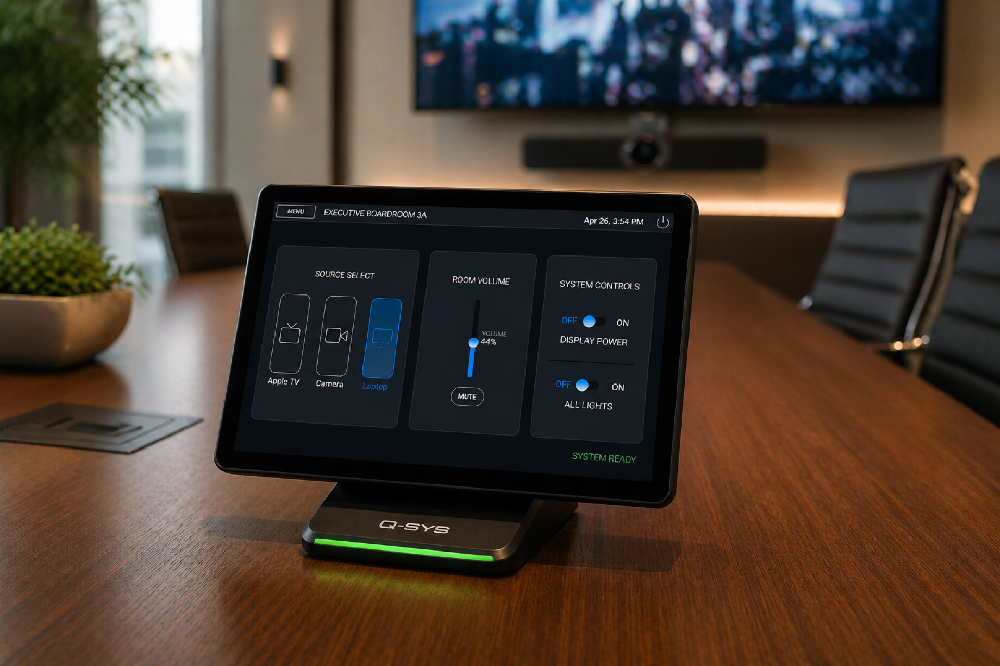
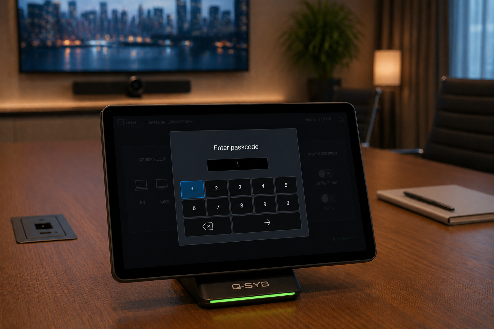
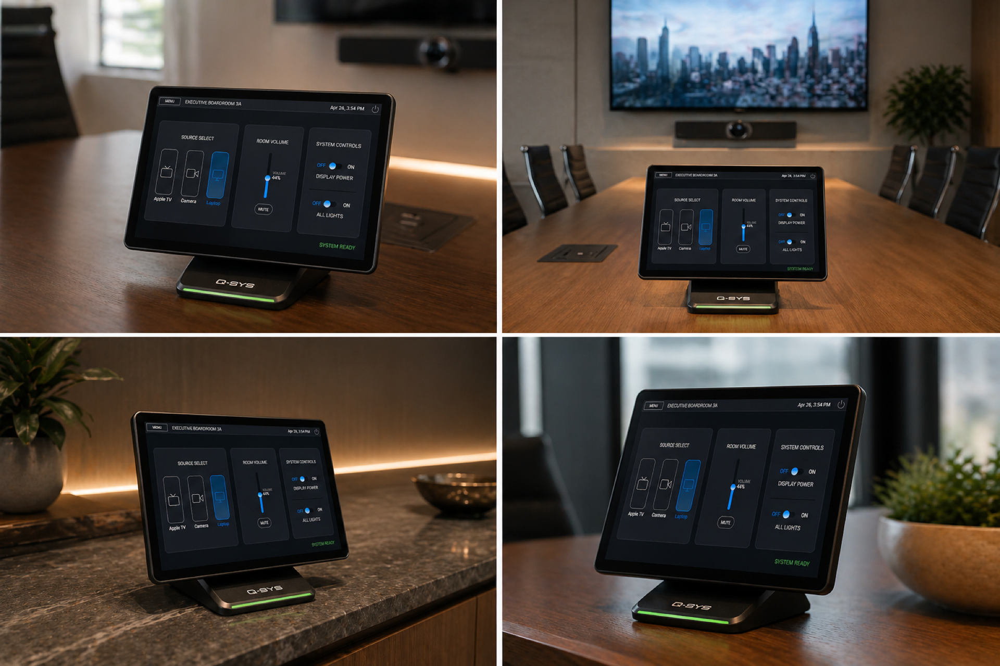

ABOUT
AV PROGRAMMER | PMP
I grew up playing saxophone. I went to Berklee College of Music where the technology side
of music pulled me in just as much as the music itself. This led
naturally to studios, which led to managing entire facility operations —
sessions, gear, people, deadlines. I loved the music, but I kept finding
myself more fascinated by the systems behind it — how everything connected,
why it broke, and how to make it work better.
Along the way I picked up coding — mostly out of curiosity, then out of
necessity, then just because I liked it. That, combined with years of
running operations, eventually pointed me straight toward AV programming, including
Q-SYS, Lua, UCI design.
The saxophone still comes out occasionally, though the cat has mixed feelings.





Q-SYS UCI — Room Control Interface
A fully custom UCI built in Q-SYS Designer — designed to actually look good.
Most UCI interfaces are functional at best. This one prioritizes a modern,
intuitive user experience with custom icon fonts, a cohesive visual language,
and a layout that doesn't make the end user feel like they're operating
a 2003 DVD menu.
Functionality is built in Lua with a modular structure — each function is
its own block, making it straightforward to adapt, swap out, or reconfigure
based on the client's needs without touching everything else.